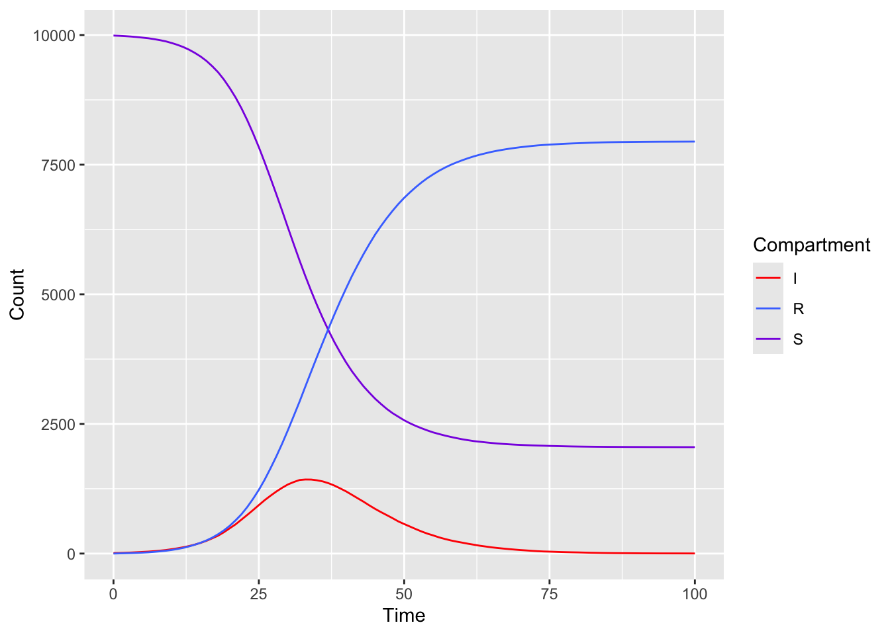
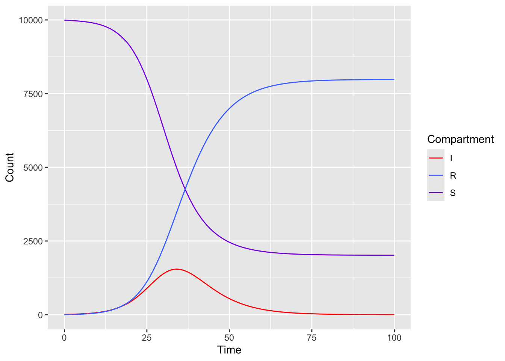

library(ABM)Warning: package 'ABM' was built under R version 4.3.1library(deSolve)Warning: package 'deSolve' was built under R version 4.3.1library(ABM)Warning: package 'ABM' was built under R version 4.3.1library(deSolve)Warning: package 'deSolve' was built under R version 4.3.1# the population size
N <- 10000
# the initial number of infectious agents
I0 <- 10
# the transmission rate
beta <- 0.4
# the recovery rate
gamma <- 0.2
# custom function to handle cases where rate == 0, which should return Inf
wait.exp <- function(rate) if (rate == 0) Inf else rexp(1, rate)
# simulation duration
sim_dur <- 100Mostly follow the example, with slight modification to simulate multiple chains concurrently
# Event for S->I transition
handler.infect <- function(time, sim, agent) {
x <- getState(agent)
x$S <- x$S - 1
x$I <- x$I + 1
setState(agent, x)
reschedule(time, agent)
}
# Event for I->R transition
handler.recover <- function(time, sim, agent) {
x <- getState(agent)
x$R <- x$R + 1
x$I <- x$I - 1
setState(agent, x)
reschedule(time, agent)
}
# set up function for reschedule time for the next event (i.e S-> I, I->R transition)
reschedule <- function(time, agent) {
# clear old event (i.e. old wait time)
clearEvents(agent)
state = getState(agent)
# compute time point for S -> I transition
# S -> I transition time is sampled from exponentional distribution with rate = beta*I*S/N
t.inf = time + wait.exp(beta*state$I*state$S/N)
# schedule event at computed time
schedule(agent, newEvent(t.inf, handler.infect))
# compute time point I -> R transition
# I -> R transition time is sampled from exponentional distribution with rate = gamma*I
t.rec = time + wait.exp(gamma*state$I)
# schedule event at computed time
schedule(agent, newEvent(t.rec, handler.recover))
}library(parallel)
# ----- Define number of chains for simulation -----
no_chain <- 20
run_simulation <- function(i){
sim <- Simulation$new()
# the initial state
sim$state <- list(S=N-I0, I=I0, R=0)
# schedule an infection event and a recovery event
reschedule(0, sim$get)
# agent = NULL means use Simulation obj as agent (which is confusing)
# logger is required to record each state of
sim$addLogger(newStateLogger(name="S", agent=NULL, state="S"))
sim$addLogger(newStateLogger("I", NULL, "I"))
sim$addLogger(newStateLogger("R", NULL, "R"))
sim_out <- sim$run(0:sim_dur)
sim_out <- sim_out[, c("S", "I", "R")]
colnames(sim_out) <- paste0(colnames(sim_out), "_", i)
sim_out
}
# parallelize simulation process
out <- parallel::mclapply(1:no_chain, run_simulation, mc.cores = parallel::detectCores() - 2)
# compute mean of all the chain
result <- data.frame(
times = 0:sim_dur,
S = rowMeans(sapply(out, function(df){df$S} )),
I = rowMeans(sapply(out, function(df){df$I} )),
R = rowMeans(sapply(out, function(df){df$R} ))
)result times S I R
1 0 9990.00 10.00 0.00
2 1 9985.00 11.75 3.25
3 2 9978.75 15.40 5.85
4 3 9971.20 19.85 8.95
5 4 9961.50 25.75 12.75
6 5 9950.00 32.00 18.00
7 6 9938.10 37.75 24.15
8 7 9920.90 46.10 33.00
9 8 9901.30 55.95 42.75
10 9 9878.15 67.90 53.95
11 10 9846.85 83.85 69.30
12 11 9811.15 101.05 87.80
13 12 9769.00 121.20 109.80
14 13 9717.20 144.75 138.05
15 14 9655.45 173.65 170.90
16 15 9584.75 206.30 208.95
17 16 9499.95 246.40 253.65
18 17 9397.35 294.75 307.90
19 18 9281.65 345.50 372.85
20 19 9140.00 412.25 447.75
21 20 8976.35 487.95 535.70
22 21 8795.80 563.40 640.80
23 22 8589.80 653.70 756.50
24 23 8359.65 744.35 896.00
25 24 8107.20 838.10 1054.70
26 25 7837.15 934.45 1228.40
27 26 7546.60 1029.45 1423.95
28 27 7242.80 1114.65 1642.55
29 28 6932.15 1195.70 1872.15
30 29 6614.40 1267.95 2117.65
31 30 6287.75 1332.70 2379.55
32 31 5967.50 1379.20 2653.30
33 32 5652.30 1418.25 2929.45
34 33 5350.80 1427.85 3221.35
35 34 5064.25 1426.70 3509.05
36 35 4792.85 1413.05 3794.10
37 36 4538.45 1390.95 4070.60
38 37 4299.25 1355.80 4344.95
39 38 4077.10 1310.85 4612.05
40 39 3875.75 1256.25 4868.00
41 40 3687.60 1199.55 5112.85
42 41 3517.65 1133.45 5348.90
43 42 3368.00 1066.50 5565.50
44 43 3226.05 1000.45 5773.50
45 44 3103.25 929.10 5967.65
46 45 2986.40 861.65 6151.95
47 46 2885.25 799.70 6315.05
48 47 2790.30 741.55 6468.15
49 48 2707.75 682.40 6609.85
50 49 2638.60 619.45 6741.95
51 50 2570.10 569.40 6860.50
52 51 2512.20 520.75 6967.05
53 52 2461.45 471.70 7066.85
54 53 2416.00 425.20 7158.80
55 54 2374.05 383.95 7242.00
56 55 2335.95 349.35 7314.70
57 56 2305.15 312.05 7382.80
58 57 2275.90 281.40 7442.70
59 58 2249.85 253.75 7496.40
60 59 2226.00 230.70 7543.30
61 60 2203.80 210.35 7585.85
62 61 2185.75 189.10 7625.15
63 62 2168.70 170.40 7660.90
64 63 2156.65 151.10 7692.25
65 64 2144.10 136.05 7719.85
66 65 2133.05 120.25 7746.70
67 66 2122.90 108.15 7768.95
68 67 2114.65 96.75 7788.60
69 68 2107.35 86.05 7806.60
70 69 2100.85 76.60 7822.55
71 70 2095.45 67.65 7836.90
72 71 2090.50 60.35 7849.15
73 72 2086.20 52.45 7861.35
74 73 2082.60 45.40 7872.00
75 74 2079.65 40.10 7880.25
76 75 2075.90 37.10 7887.00
77 76 2073.30 33.40 7893.30
78 77 2070.45 29.55 7900.00
79 78 2067.85 26.60 7905.55
80 79 2065.50 24.15 7910.35
81 80 2063.75 21.95 7914.30
82 81 2062.25 18.95 7918.80
83 82 2060.95 15.70 7923.35
84 83 2059.70 13.65 7926.65
85 84 2058.75 11.35 7929.90
86 85 2057.60 9.85 7932.55
87 86 2057.10 8.60 7934.30
88 87 2056.25 7.75 7936.00
89 88 2055.70 7.15 7937.15
90 89 2055.15 6.25 7938.60
91 90 2054.85 5.45 7939.70
92 91 2054.45 4.65 7940.90
93 92 2053.90 4.40 7941.70
94 93 2053.75 3.75 7942.50
95 94 2053.45 3.35 7943.20
96 95 2053.20 3.25 7943.55
97 96 2053.05 3.05 7943.90
98 97 2052.65 2.95 7944.40
99 98 2052.45 2.75 7944.80
100 99 2052.25 2.50 7945.25
101 100 2052.15 2.00 7945.85Plot result
Warning: package 'ggplot2' was built under R version 4.3.1
Estimate solution of ODE using Euler’s method
# define event handler
handler <- function(time, sim, agent){
# compute delta_t
# the smaller the time step is, the more accurate the estimation
timestep <- 0.1
# clearEvents(agent)
x = getState(sim)
# compute dS/dt, dI/dt, dR/dt according to the formulae
dS = - x$I*beta*x$S/N
dI = x$I*beta*x$S/N - x$I*gamma
dR = x$I*gamma
x$S = x$S + dS*timestep
x$I = x$I + dI*timestep
x$R = x$R + dR*timestep
setState(sim, x)
schedule(agent, newEvent(time + timestep, handler))
}ode_sim <- Simulation$new()
# add loggers
ode_sim$addLogger(newStateLogger("S", NULL, "S"))
ode_sim$addLogger(newStateLogger("I", NULL, "I"))
ode_sim$addLogger(newStateLogger("R", NULL, "R"))
ode_sim$state <- list(S = N - I0, I = I0, R = 0)
# schedule event at time 0
ode_sim$schedule(newEvent(0, handler))
ode_result <- ode_sim$run(0:100)Plot result

Check if estimated parameter returns expected gamma and beta
# define the SIR model for deSolve
sir_model <- function(time, state, parameters) {
par <- as.list(c(state, parameters))
with(par, {
dS <- -beta/N * I * S
dI <- beta/N * I * S - gamma * I
dR <- gamma * I
list(c(dS, dI, dR))
})
}# define initial_state using values defined above
initial_state <- c(S = N - I0, I = I0, R = 0)
# define loss function
mse <- function(parameters) {
pred <- ode(initial_state, times = 0:sim_dur, func = sir_model, parms = parameters)
pred <- data.frame(pred)
sim <- result
# compute residual
res <- data.frame(
S = pred["S"] - sim["S"],
I = pred["I"] - sim["I"],
R = pred["R"] - sim["R"]
)
mean(sum((res)**2))
}
optim(c(beta = 0.4, gamma=0.5), fn = mse, gr="BFGS")$par
beta gamma
0.4005236 0.2022009
$value
[1] 651810.4
$counts
function gradient
69 NA
$convergence
[1] 0
$message
NULLprint(paste0("beta for simulation ", beta))[1] "beta for simulation 0.4"print(paste0("gamma for simulation ", gamma))[1] "gamma for simulation 0.2"# define initial_state using values defined above
initial_state <- c(S = N - I0, I = I0, R = 0)
# define loss function
ode_mse <- function(parameters) {
pred <- ode(initial_state, times = 0:sim_dur, func = sir_model, parms = parameters)
pred <- data.frame(pred)
sim <- ode_result
# compute residual
res <- data.frame(
S = pred["S"] - sim["S"],
I = pred["I"] - sim["I"],
R = pred["R"] - sim["R"]
)
mean(sum((res)**2))
}
optim(c(beta = 0.4, gamma=0.5), fn = ode_mse, gr="BFGS")$par
beta gamma
0.3970002 0.1979581
$value
[1] 18069.39
$counts
function gradient
69 NA
$convergence
[1] 0
$message
NULLprint(paste0("beta for simulation ", beta))[1] "beta for simulation 0.4"print(paste0("gamma for simulation ", gamma))[1] "gamma for simulation 0.2"